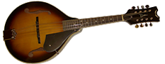

Biography
Almost A Song Biography
LeighAnn Hood: Leigh Ann was born in Fairmont and began playing the violin at age 13 with Fairmont State's prep department under Alex Lubman, Virginia Cox and Anne Hamilton. She switched to fiddle in her mid-20's and played at Percival Hall and with Wha-Ke-We-Nn. She took lessons from Rachel Eddy. Her favorite fiddlers are Jake Krack and Alasdair Frasier. She is married with one child.
Brian Conaway:
Keith Long: My primary influences were and still are local and jam musicians who play the traditional/americana music for fun. The best musicians in the world are not on the radio or in Nashville/Austin etc. they are playing on their porches as I type this.
Rick Steiner: Has been around the “Old Time” Appalachian music for most of his life from the Ivydale festivals in the late 60's on, always learning songs the way the old timers played. He's a traditional two finger banjo player who’s influence included Jenes Cottrell, David Morris, Alan Freeman and Tom King. Has adapted his own way of playing. Pair off with a fiddle and play till our fingers fall off.
John Moffatt:
Steve Smigocki: Grew up in the D.C., MD area having a mother who was a country/hawiian singer. His early influences were Ian and Sylvia and the Seldom Scene at the Cellar Door. Buffalo Springfield, Flying Burrito Bros and the Jayhawks were recording favorites. His mandolin playing comes from the free flowing licks styled after lead guitar players Mark Knopfler and Lindsey Buckingham.

  |
 |
Copyright © 2010 Almost A Song
● All Rights Reserved |
Web site design by: renorigs.com |